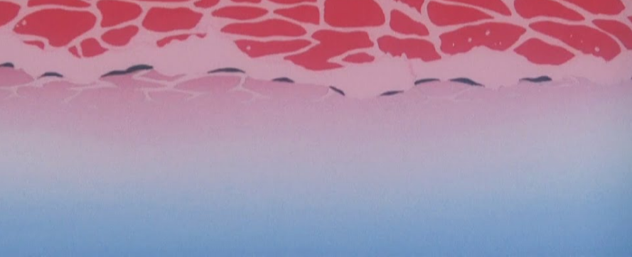
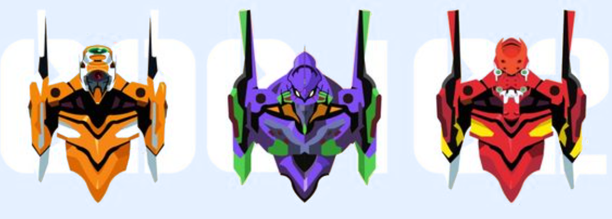

Популярный аниме-сериал в жанре «меха», снятый режиссёром Хидэаки Анно на студии Gainax
В 2015 году на Землю вновь нападают Ангелы, загадочные существа, отличающиеся гигантскими размерами и сокрушительной силой. Единственной надеждой для спасения человечества являются Евангелионы (сокращённо — Евы), человекоподобные боевые машины, разработанные Nerv, специальным отделом Организации Объединённых Наций. Евы в состоянии отражать нападения Ангелов, однако есть одна особенность — пилотировать роботов может ограниченное число людей. Только горстка подростков, рождённых четырнадцать лет назад, через девять месяцев после первого появления Ангелов, может управлять Евами. Один из них — Синдзи Икари, отец которого является руководителем Nerv. Втянутый в водоворот битв и событий, которых он не понимает, Синдзи вынужден проникнуть в глубины собственного внутреннего мира, чтобы найти силы и храбрость не только для сражений, но и для выживания, иначе он рискует потерять всё.
Аянами Рей
Сорью Аска Ленгли
Синдзи Икари
Пилот eva-00.
Пилот eva-02.
Пилот eva-01.
